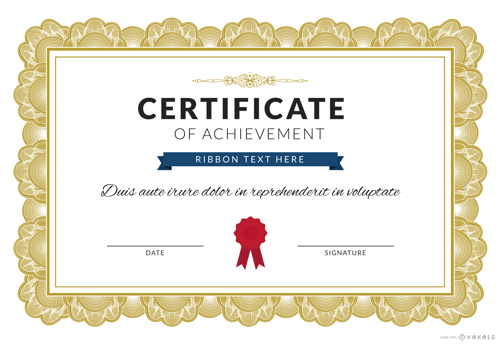

Monitor de Reforço Escolar
Ajude crianças com suas tarefas escolares e atividades lúdicas. Requer 4 horas semanais.
Quero ParticiparAjude crianças com suas tarefas escolares e atividades lúdicas. Requer 4 horas semanais.
Quero ParticiparAuxilie no preparo e distribuição de alimentos para a comunidade. Turnos flexíveis.
Quero ParticiparParticipe de mutirões de limpeza, plantio de árvores e ações de conscientização.
Quero Participar
"Ser voluntário na Conecta ONG mudou minha perspectiva de vida. Ajudar o próximo é uma experiência incrivelmente gratificante."
Valorizamos cada minuto dedicado pelos nossos voluntários. Veja um modelo do nosso certificado simbólico de agradecimento.
